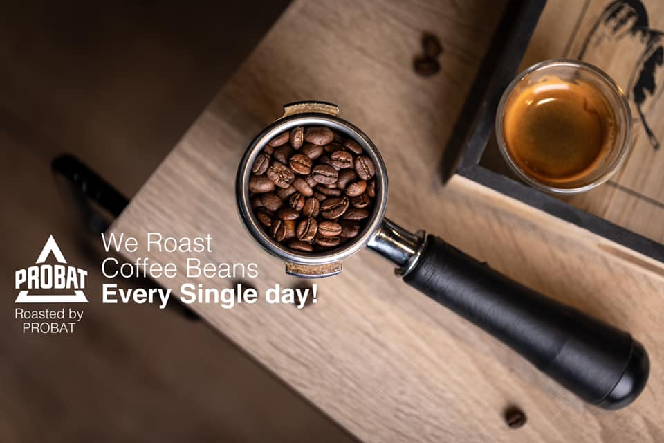

Welcome To Your Third House
about us

what makes our coffee special?
It means that the coffee quality is beyond the final product served on your cup. Its quality springs from the start—the type of coffee beans grown, the region, roasting, and brewing, down to the actual coffee served right under your nose. That said, here's why speciality coffee makes coffee all the more special
What’s good about today’s coffee industry is that it is leaning more towards global ethic consciousness.